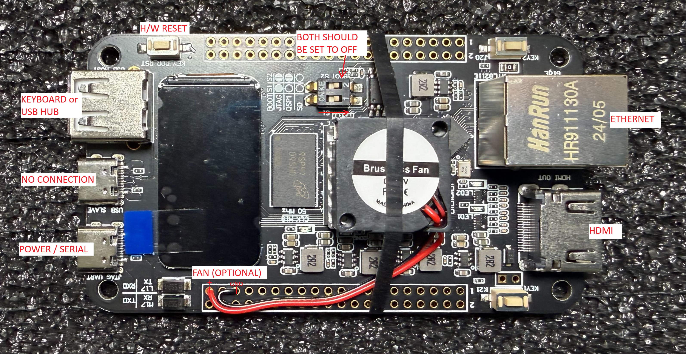

Smart Zynq SP Connection Map
Use this diagram to wire power, HDMI, Ethernet, USB, SD card, UART, and JTAG connections on the Smart Zynq SP board when running Sandpiper.
Connection Diagram

Keep USB-UART connected for console access; Ethernet is optional but recommended for network and file transfer.